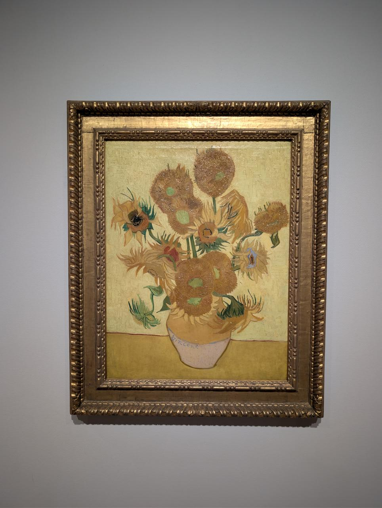
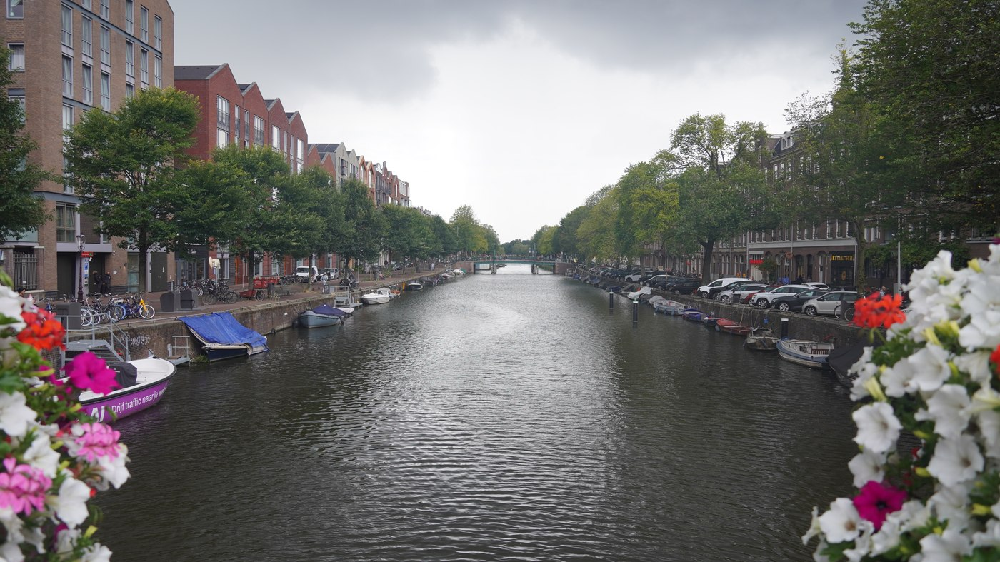

wander / europe trip
Amsterdam, Berlin, Prague — however it ends up getting told. Museum walls in one format, everything else the camera caught in another.

Museum walls.A postcard-and-stamp drag canvas of the artwork itself — Van Gogh Museum and the Rijksmuseum so far, Berlin and Prague's museums still to come.
40 pieces, Amsterdam
Everywhere else.A strip of negatives that develop into color on tap — the streets and corners between the museums, Amsterdam so far.
Amsterdam roll, growingThe whole roll, not just the keepers — every frame circled in grease pencil or passed over, left visible either way.
15 of ~200 frames, Sept 1